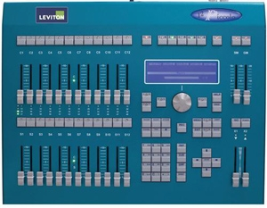
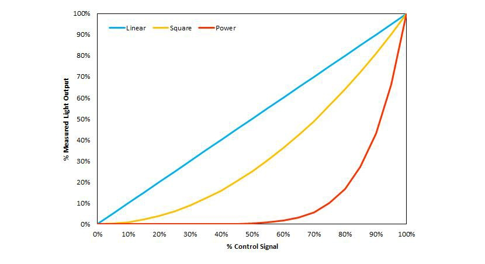
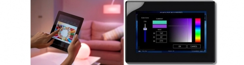

Controlling color-tunable luminaires can be challenging for specifiers, since different manufacturers use different approaches. Some manufacturers provide proprietary control devices, which often rely on an existing protocol with a customized user interface/hardware. Other color-tunable lamps and luminaires rely on controls using standardized or open protocols, often from third-party manufacturers, which provide a greater range of options but may also lead to compatibility issues.
Before tackling the color component of LED products, it is important to understand basic control, or dimming. LEDs are complex electronic devices which have non-linear current-voltage relationships, and therefore they require a driver which controls the current – similar to the way a ballast controls a fluorescent lamp. The driver determines the dimming performance of the LED source, and the combination of the LED driver and the dimmer determines the quality and range of the dimming. While existing phase-cut dimmers can be used with LEDs, compatibility is limited, and compatibility does not ensure a lack of flicker, smoothness, or an acceptable minimum dimmed level. Control techniques that separate the control signal(s) from the AC mains voltage, such as 0-10V, DALI, DMX, and wireless options, can improve compatibility and offer the potential for more advanced features such as color-tunability. All but 0-10V offer bi-directional data exchange, which allows the LED system to provide feedback on its operating state. All of these control systems are now being adapted to control color-tuning products.
Full-color-tunable LED luminaires and white-tunable LED luminaires usually require full, undimmed power to be delivered to the LED driver(s) in the luminaire, typically delivered using standard building voltage (such as 120V, 277V) using conventional hard-wiring techniques. They generally require separate instructions for the intensity of each color of LED in the optical mix (such as warm white, cool white, red, green, blue, amber, etc., depending on the product design), with instructions for dimmed level and color sent over separate wires or through wireless signals from the user interface to the driver, or from the user interface to the black-box device that processes control signals and converts them to driver instructions. Exceptions to this are lighting systems that operate on low-voltage power using Power-over-Ethernet (POE).
The LED control information is usually transmitted using low-voltage signals over smaller-gauge wire (18-gauge or smaller). The control wiring can use CAT5 cable, a “twisted-pair,” or similar cabling that usually is not run in conduit. This low-voltage cabling is easier to install and safer to handle, so it can be installed by less-experienced, lower-hourly-rate electrical workers. The signals sent to the driver or black-box device between control and driver(s) can be transmitted using a number of protocols. (A communication protocol is an established instruction set sent with analog or digital signals. Some protocols define how to interpret the signals; others allow this to be defined by the luminaire manufacturer.) The signals are used to tell the luminaire how to adjust color and output. There are two principal types of control protocols: wired and wireless.
The most common wired control techniques include:
0-10V
This is an analog control signal produced through the voltage on the control wires, ranging from 0 to 10 volt in the U.S. For color-changing luminaires there is usually one 0-10V dimmer or dimming channel of a larger control system to raise/lower the light intensity, and a second 0-10V dimmer or dimming channel to control the color. This is a control protocol originally designed to dim fluorescent lamps, and it is familiar on commercial jobsites and fairly inexpensive. It allows one-way communication only, so a driver is not able to report back that it is failing, for example. The 0-10V protocol does not specify the relationship between control signal and relative light level, so a small change on a dimmer slide may produce a large change in light output, or the full range of light output could be produced through the top 50% of the slider range. 0-10V control systems can deliver square-law dimming or linear dimming (see discussion below), depending on the dimmer used and the programming inside the LED driver.
Applications of the 0-10V protocol for color-tuning products include commercial projects where low-precision dimming and color-selection is acceptable and where cost and familiarity are key considerations. Incompatibilities can occur among components because the electrical characteristics for 0-10V devices are not fully defined. 0-10V systems can also show inconsistencies in light output because of the control wire run lengths. Voltage drop is a common occurrence with low voltage and long run lengths, and this means that a luminaire 10’ from the dimmer may receive an 8V dimming signal, while a luminaire 120’ away may receive a decayed signal of 7V. Although receiving a control signal from the same dimmer, the two luminaires may deliver visibly different light outputs.
DALI
DALI stands for Digital Addressable Lighting Interface. Also originally designed to control fluorescent dimming ballasts (1990s), the controller sends a signal to the LED driver that ranges between 0 and 255 in integers. The signal can be slow, so there can be up to a few seconds of delay between the time the user interface control button is pushed and the lighting reacts. DALI allows limited reverse communication, so there can be some feedback from components to the controller for troubleshooting and status reporting. The DALI protocol allows addressing up to 64 individual components per DALI link at 1200 bits/second. DALI drivers incorporate an algorithm that translates the controller’s linear 0-255 signal into a light output that is either linear (e.g., 100% signal = 100% output; 50% signal = 50% output) or a power law curve (e.g., 4th power: 100% signal = 100% output; 75% signal = 32% output; 50% signal = 6% output). It is not always clear when specifying a DALI driver what the relationship is between the input signal and the light output. The power law curve, also sometimes called a “logarithmic” curve, is an attempt to reproduce the dimming curve from incandescent lamps.
Control wiring can run from a luminaire to another luminaire, or from a sensor to a user interface to a luminaire, etc., in any order. DALI-based color-changing luminaires can be programmed with a computer-based front end, or with a multi-scene preset wallbox user interface, or with a pair of wall-box slider dimmers. DALI control systems can incorporate Building Automation System signals, as well as input signals from photosensors and occupancy sensors.
Applications for color-tuning include commercial projects where there is a larger building control system managed by facility engineers who can program and monitor feedback from devices. DALI is appropriate for applications where a two-second delay between dimmer control and light output or color change is acceptable.
EcoSystem
A Lutron-proprietary implementation of the DALI protocol, with requirements and capabilities similar to DALI. Some elements are interchangeable with conventional DALI system components.
DMX-512
A protocol originally designed for the theater in 1988, where single luminaires had the capability of gel-scrolling, beam-changing, adjusting intensity, and movement, DMX-512 has the digital capabilities needed to address and send multiple signals to an individual luminaire to control color and intensity of multiple LEDs. DMX-512 can address up to 512 channels per data link (called a “universe”) at 250 kbits/second. It sends instructions in integers of 0 to 255 to a single luminaire, one instruction for each characteristic of the luminaire. There is an almost instantaneous response by the luminaires to the control signal. DMX-512 is capable of two-way communication if the system has the Remote Device Management (RDM) feature. Daisy-chained wiring is required (i.e., wiring from lighting device to the next device, to the next device, etc.) No wiring is allowed from a single device to two devices, for example. DMX is flexible in the kind of cabling that can be used, as long as there are two pairs of low-voltage wires to carry a high-speed signal.
User interfaces for DMX-512 systems vary widely, from intuitive touch-screen-based color-mixing graphics to banks of theatrical sliders. Almost anything is possible, but selecting the best interface means the difference between a clumsy controller that will soon be abandoned, and one that is easy and fun to use for even a novice. Apps are available for DMX modules that send the signals to the luminaires. The level of repeatability and precision for color and intensity selection depends on the graphical user interface (GUI). That is, a professional theatrical light board would be very precise; a rotatable knob that cycles through the color wheel would not.
DMX luminaires nominally interpret their input control signal linearly, but different dimming curves can be programmed into the DMX-512 system. As a result, DMX can produce a linear, square law, power law, or customized relationship between the dimmer input and the control signal output.
Applications include theaters and architectural spaces in performing arts complexes, houses of worship, or education facilities, where technicians will be familiar with the use of DMX for the theater. This protocol can be used for theatrical or architectural luminaires, as long as the driver is able to interpret DMX signals. This allows incorporating house lights into the master controls for the theater, for example. DMX signals can also be used internally in color-changing lighting systems, even when the user interface is analog or DALI. This allows the fast response of DMX within the color-changing lighting system, even though the user is using a familiar dimming system in other parts of the building. This requires an interface (or “translator”) that converts from one protocol to another.
Some LED drivers are multi-lingual, and are able to interpret DALI, DMX, or 0-10V signals, for example.
Wireless controls can transmit control signals from the user interface to the luminaire driver, through a receiver attached to the driver, luminaire, or a lamp. Some receivers are multi-lingual, so they can interpret ZigBee, Wifi, or Bluetooth signals, for example. Some receivers are only able to interpret proprietary signals, so the wireless devices are not interchangeable. The following are some of the more common wireless communication protocols:
- ZigBee
- Wifi
- Bluetooth
- EnOcean
- WDMX
- Proprietary to an individual manufacturer
Applications: Wireless control for color-tuning luminaires makes sense when the lamp or luminaire is new and has the wireless receiver and controllable driver(s) built in, or when wiring costs are prohibitive. For existing installations, it is generally more complicated and labor-intensive to retrofit receivers at each luminaire or at a lighting circuit, but it may ultimately be less difficult to do this than to run new control wire to each luminaire. Some color-tunable retrofit lamps are capable of receiving and interpreting wireless signals without special wiring.
It would seem to make sense that dimming a slider dimmer down to half the travel distance on the slider would translate to about half the light output from the luminaire. That would mathematically be a linear dimming curve, where the percent light output is the same as the percent of displacement on the dimmer slider. However, most dimmers for incandescent lamps do not work that way. In fact, 50% of the voltage delivered at full output on the slider usually corresponds to about 25% of the measured light output, even though human eyes usually see that amount of light to be approximately half of the full output. This describes a “square law curve,” where the light output is approximately the percent voltage squared. So, at 20% of the voltage, the light output measures at approximately 4% of the full output, while the observer would perceive about one-fifth of the full light output.
With LED systems, the translation from percent of the dimmer control range to measured light output includes two transfer functions, one that resides in the dimmer, and the second that resides in the driver:
- The transfer function of the setting on the dimmer to the signal sent to the driver by the dimmer
- The transfer function of the signal received by the driver to the current output to the LEDs
Dimmers are produced with either a linear or square-law transfer function. Drivers are produced with either a linear or square-law transfer function. This is based on a choice made by the dimmer or driver manufacturer to reproduce the perceived dimming level of the simple incandescent lamp that follows the square law from the linear dimmer input. However, if the dimmer and driver are not carefully matched, the light output may not seem to correspond to the setting on the dimmer, which can be confusing for users. (A third transfer function seen in dimmers is the S-curve, but for illustrative purposes, only linear and power curves will be addressed here.)
The plot below illustrates the results of pairing the dimmer and driver of varying control-signal transfer functions. The blue line represents a linear dimming curve, created with a linear-response dimmer paired with a linear-response driver. The yellow line is a square-law dimming curve, created with either a linear-response dimmer paired with a square-law response driver, OR a square-law response dimmer paired with a linear-response driver. The pairing of a square-law dimmer and square-law driver will produce the red line’s power-law curve.
The power-law curve is also imprecisely called a “logarithmic” curve in manufacturers’ literature. At 50% of the dimmer setting, the approximate light output is (0.50)4 = 6.3% of the full output; and at 20% of the dimmer setting, the approximate light output is 0.2% of the full output. The result effectively translates to 90% of the LED system’s measured output range into the top 25% of the dimmer travel or digital setting, but provides very fine control of light output at the very low end of the dimming range.

The wireless control’s user interface is a critical element. The intuitiveness of its use and its GUI, especially in selecting complex colors rather than simpler white-tuning selections, will determine whether the system is embraced and used over many years’ time. When designing controls for color-changing projects, it is important to determine whether the color modifications will be made by users, facility managers, or designers. Here are some questions to consider:
- How simple or sophisticated should the user interface be?
- How important is it that color performance be maintained over time and matched by another source?
- Where does the controller live? Is it located in place of a wall switch, is it a handheld remote, or is it computer software? Can it get easily lost?
- Are the instructions easy to find if the user forgets how to program the desired colors?
The specifiers and manufacturers will need to discuss these questions and may choose to develop some standardized user interfaces (such as color wheels, palettes, or other color-selection graphics and devices) that are intuitive and can be widely applied among different color-tuning LED systems.

When specifying or offering control systems for color-changing luminaires, consider the following questions:
- Who will be using the controls? How knowledgeable is the user and how complex can the user interface be before the user gives up or tries to circumvent the system? If programming the system is complex, then the owner/manager of the site needs to be prepared for the cost and time of training staff or hiring outside consultants to reprogram the system when needed. Also, selecting chromaticity using CCT (e.g., 2200 K, 2700 K, 5000 K) may not be intuitive to a user who does not understand the Kelvin scale used in lighting.
- Is the controller intuitive to use? An ideal control system is easy to use and understand, even among users or programmers who do not use it on a regular basis. It is problematic, however, if a user needs to refer to a complicated manual each time the color programming is modified. If changes are only implemented by an experienced professional in the specific application, this is less of an issue.
- How smooth is the dimming or color transition as the system is adjusted from high to low output and vice versa, or from warm to cool and vice versa? The need for smoothness varies by application. In an auditorium or theater, smooth dimming is absolutely essential. In a retail store where the color is only adjusted once per season, a jerky transition may not be an issue.
- What is the needed precision of dimming? Some dimming systems are not able to tune the light output or color to a fine degree, or may not tune color and light output in a way the user expects. For most commercial applications, high precision is a low priority; for restaurants and casinos, the need for precision – especially at the low end of the dimming range – is greater.
- How fast will the luminaire react to the color or dimming control signal? DALI systems exhibit a several-second time delay between pressing a button and the reaction of the lighting system, which is acceptable in most commercial applications. DMX systems have an almost instantaneous response, which is expected in theater applications.
- How low does it dim? The minimum level of stable dimmed output varies widely, and dimming that drops to 1% output and lower will usually be more costly. In commercial office and education spaces, 10% minimum levels are usually acceptable. For conference rooms and teaching spaces, a 5% minimum may be acceptable. For restaurants, theaters, auditoriums, museums, and entertainment spaces, a 1% or lower minimum level is highly desirable because it can convey a mood or help focus the attention of the audience.
- How does it transition to OFF? "Dim-to-black" or "dim-to-off" are terms used to describe a dimming system’s ability to transition the light level smoothly down to OFF, as incandescent lamps do. Smooth extinguishing of lighting is important for mood-setting and for minimizing distraction from activities happening on stage, for example. The reverse is often also true, with the client wanting to raise the light levels smoothly from OFF to low levels without bumps or jerks or flashes. This may be an important consideration in a dinner theater or similar application using dim-to-warm house lighting systems.
- What are the dimming curves for the dimmer and driver (see discussion, above), and how are the two specified to ensure the kind of dimming curve desired for the installed lighting?
- Is there flicker from the system? Phase-cut dimmers, drivers, and an interaction between the two can introduce problematic flicker to the lighting. For the vast majority of applications, the combination of dimmer and driver should produce a Percent Flicker that is no greater than the system’s flicker frequency times 0.081. If the manufacturer is unable to provide the Percent Flicker and the flicker frequency for the combination system in full output, mid-output, and minimum output levels, then it is critical to see a mockup of the system and evaluate it for flicker (see Flicker Technology Fact Sheet).
- What are the wiring and connector requirements between user interface and black-box device (if needed), and between black-box device and luminaires? This includes wire types, sizes, shielding needed, connectors, and voltage carried by the wiring. These requirements will affect the experience level of the electrician (or whether an electrician is needed at all), ease of installation, and cost of installation/retrofit.
- For wireless communications, what are the data speed and range requirements for the signal?
- How does the control system interface with other lighting control systems in the building? Should it be a standalone system, or integrated? How well do the color-changing controls work with other control systems, including sensors (e.g., occupancy or daylight) and luminaires used in the same room? If the recessed troffers are color-changing luminaires but the wallwashers are not, it may be necessary to have separate wall controls, and they may look and feel clumsy. Can the controls and sensors be integrated to operate together?
---------------------
1IEEE Standard 1789-2015: IEEE Recommended Practices for Modulating Current in High-Brightness LEDs for Mitigating Health Risks to Viewers.